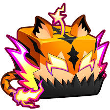

From most common to rarest.
Devil Fruits are the heart of Blox Fruits. Each one gives you a different set of moves. Fruits come in five rarities, and the rarest fruits are usually the strongest.
| Fruit | Type | Rarity |
|---|---|---|
| Bomb | Natural | Common |
| Spin | Natural | Common |
| Flame | Elemental | Uncommon |
| Light | Elemental | Rare |
| Buddha | Beast | Legendary |
| Dough | Elemental | Mythical |
| Tiger | Beast | Mythical |
| Dragon | Beast | Mythical |
Every player has a race that gives special abilities. Races include Human, Mink, Fishman, Skypiean, Ghoul, and Cyborg. Some races can be upgraded through special quests.
Note: Fruit stats and rarities change with game updates. Check the official wiki to make sure everything is up to date.